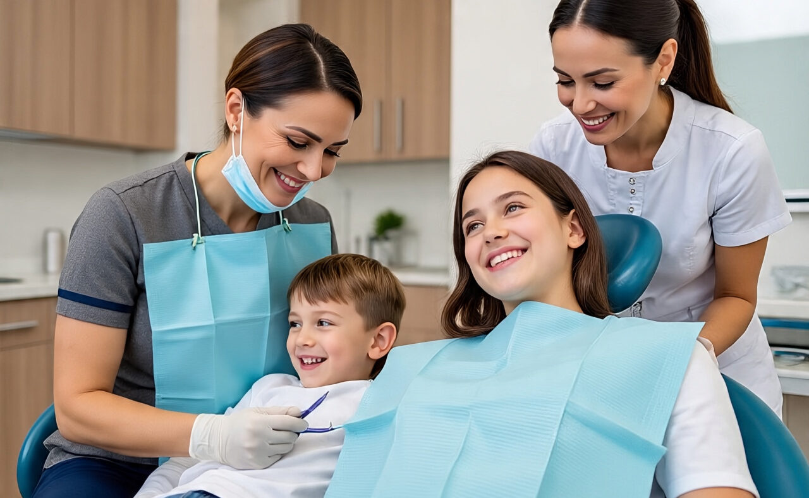

Cosmetic, implant, and restorative dentistry
Dr. Nicholas Davidson
Dr. Davidson has completed advanced training in cosmetic dentistry, placing and restoring dental implants, and root canal therapy. His dental career includes extensive experience with smile makeovers.
- Undergraduate
- Michigan State University
- Dental school
- University of Detroit Mercy
- Outside the office
- Water sports, snowboarding, and tournament poker